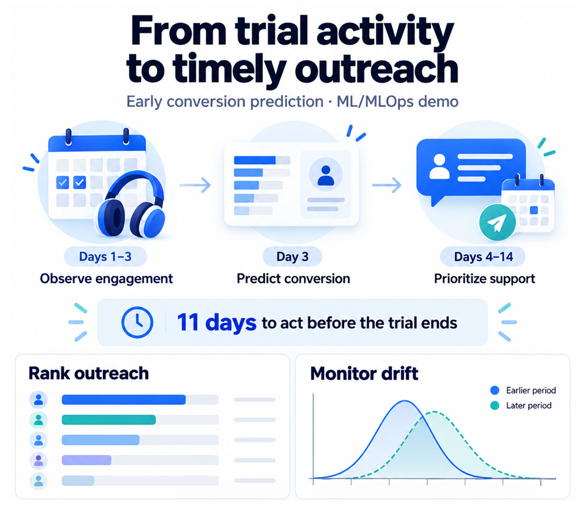
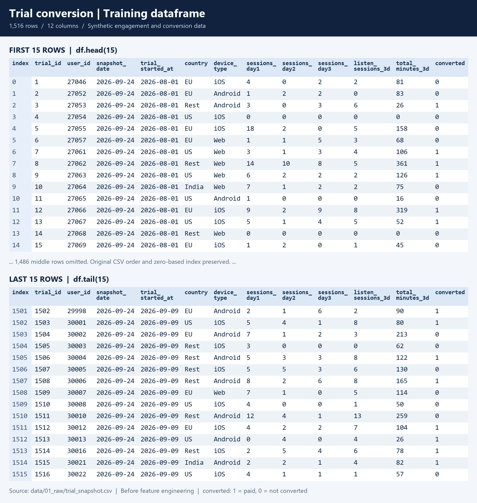
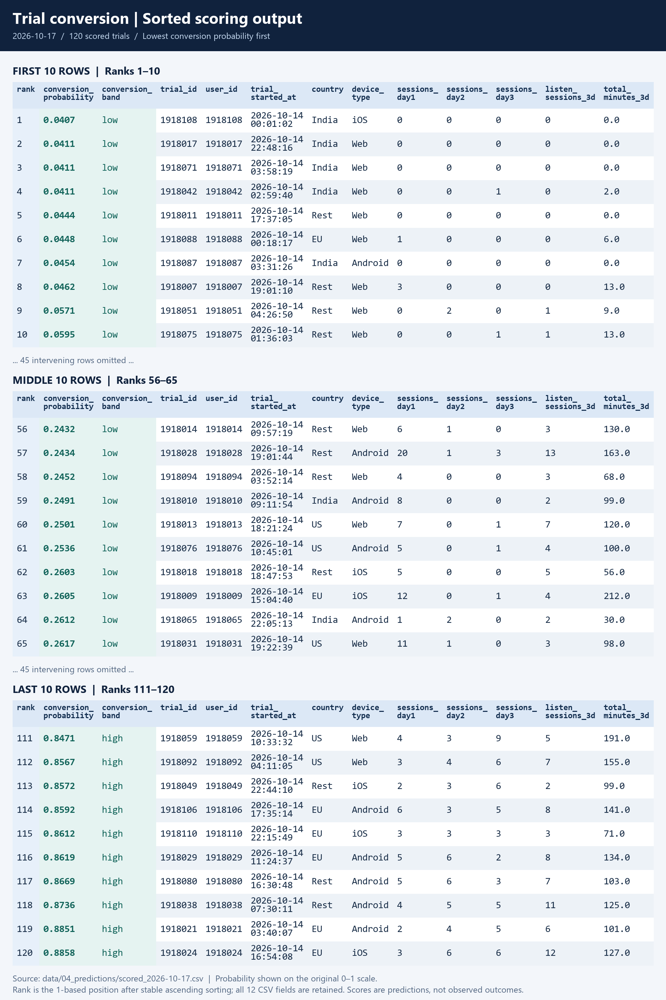
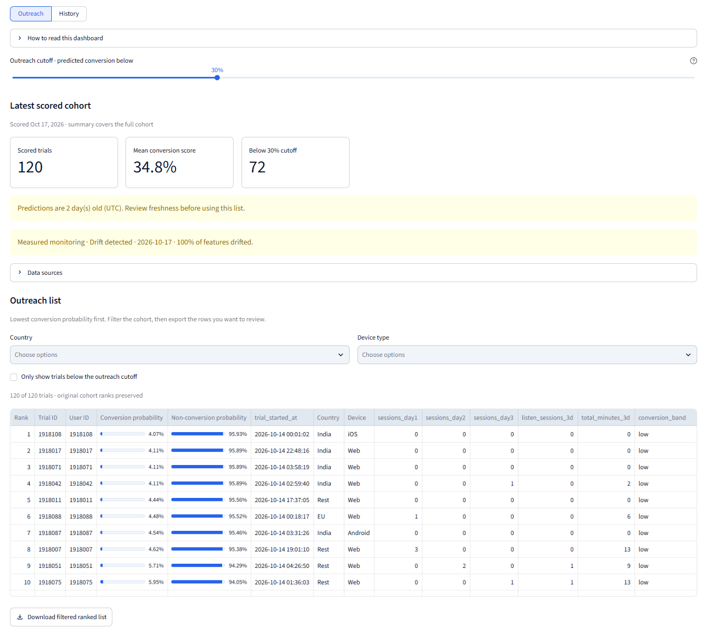
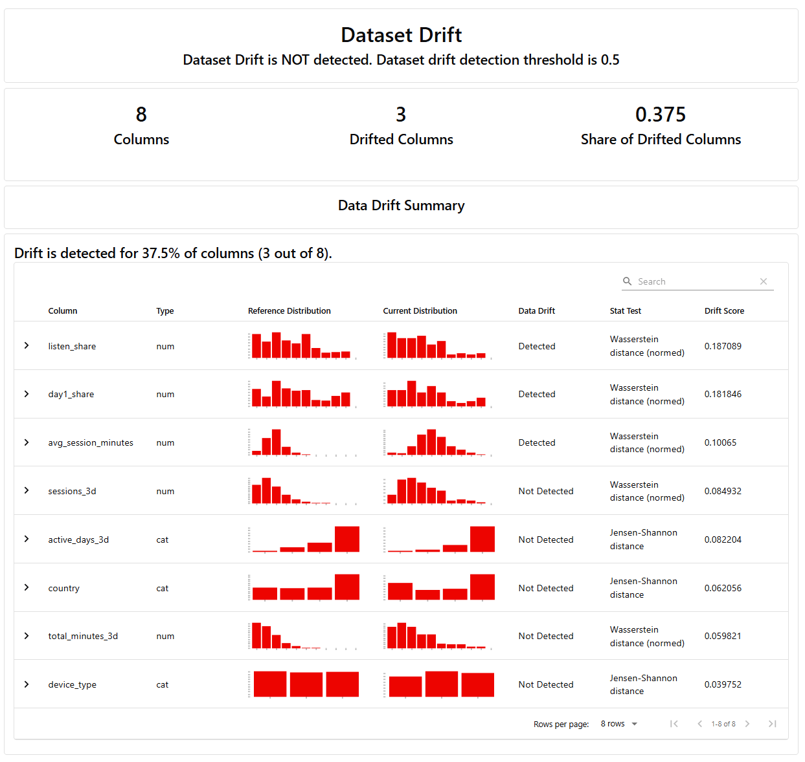

Trial Conversion Prediction & MLOps


This project models a subscription-based digital content platform using synthetic user engagement and trial-conversion data. It demonstrates an end-to-end machine learning system for predicting paid conversions, scoring new trial users, and monitoring data drift, with lessons applicable to similar subscription services.
Users receive a 14-day trial to explore the service. At the end of that period, they can convert to a paid subscription to continue accessing the content or abandon the service. The model scores users after their first three days of activity, leaving approximately 11 days to act before the trial expires. A daily ranked list helps the growth team prioritize onboarding support during that remaining window.
Background & Problem Statement
In this subscription service scenario, trial users explore digital content through sessions, including listening sessions. Some return regularly and spend more time engaging with content; others use the service briefly or stop returning. These early patterns provide signals about whether a user will choose a paid subscription when the 14-day trial ends.
The model receives each user's session counts for days 1, 2, and 3, the number of listening sessions and total engagement minutes across those days, plus country and device type. It transforms these inputs into features describing activity volume, consistency, and depth. The synthetic data includes the eventual conversion outcome for training; that outcome is what the model predicts for new trial users.
Growth teams have limited time to contact trial users. Scoring at the end of day 3 lets them review weak engagement while days 4 through 14 are still available for onboarding support or engagement prompts. The operational question is: which active trials should the team review first?
The system ranks users from lowest to highest predicted conversion probability. This supports prioritization, but conversion likelihood alone does not establish who will benefit from outreach. Measuring incremental conversions requires a controlled experiment.
Data & Feature Engineering
The project uses synthetic engagement and trial-conversion data to represent a subscription-based digital content service. Training uses a fixed CSV extract of a PostgreSQL trial snapshot, and daily scoring reads dated day-3 cohorts from S3. The target is converted: 1 for a trial that became a paid subscription and 0 for one that ended without conversion.


Raw prediction inputs: sessions_day1, sessions_day2, sessions_day3, listen_sessions_3d, total_minutes_3d, country, and device_type. Only information available in the first three days is used to construct the following model features:
- Activity volume: total sessions across days 1–3 (
sessions_3d) and total engagement minutes (total_minutes_3d). - Consistency: number of days with at least one session (
active_days_3d) and the fraction of all sessions occurring on day 1 (day1_share). - Engagement depth: listening sessions divided by total sessions (
listen_share) and total minutes divided by total sessions (avg_session_minutes). - Context: country and device type, one-hot encoded for modeling.
- Consistent transformations: training, inference, and drift monitoring reuse the same feature function; zero-session trials retain zero-valued shares and duration.
Modeling & Recorded Results
XGBoost uses 500 trees, a maximum depth of 3, and a learning rate of 0.01. Evaluation uses a stratified 75% / 25% train-test split with a fixed random seed.
Saved Model Evaluation
| Measure | Recorded Value |
|---|---|
| Training / held-out test examples | 1,137 / 379 |
| Candidate test ROC-AUC | 0.8831 |
| Previous recorded ROC-AUC | 0.8750 |
| Absolute AUC improvement | 0.0081 |
| Required improvement for promotion | 0.0050 |
| Promotion decision | Promoted · registered model version 2 |
These values come from the saved evaluation artifact, not a live production measurement. ROC-AUC describes ranking performance across thresholds; it is not an accuracy percentage. Validation on later cohorts and probability calibration remain next steps.
Experiment Tracking & Model Promotion
MLflow records parameters, dataset metadata, evaluation results, and promotion decisions. The conditional training workflow compares the candidate with the higher available incumbent AUC from local artifacts and the model registry.
- Promote: require an absolute AUC improvement of at least 0.005, publish artifacts to S3, register the model, and assign the champion alias.
- Retain: preserve the incumbent artifacts and alias when the candidate fails the improvement rule.
- Separate delivery: model promotion publishes artifacts; the container deployment pipeline distributes the model to serving and batch jobs.
The original training command also remains available and publishes unconditionally. The promotion comparison uses saved incumbent scores, so enforcing a common evaluation set is an identified improvement.
Deployment & Daily Automation
Separate Docker images package the API and scheduled jobs. GitHub Actions runs Ruff and pytest, builds both images, and publishes them to GitHub Container Registry on the main branch before deploying to AWS EC2.
- On-demand predictions: FastAPI validates inputs and returns a conversion probability and low, medium, or high band.
- Daily scoring: a 06:30 cron job uploads a CSV to S3, sorted by ascending conversion probability.
- Daily monitoring: an independent 06:45 cron job writes Evidently HTML reports and JSON drift verdicts to S3, with a Slack webhook alert when the newest cohort drifts.
- Quality checks: repository tests cover API validation, prediction structure, zero-session features, and model promotion decisions and failures.
Schedules follow the EC2 host timezone. Serving and scoring load the model packaged into their images; drift checks compare incoming features against the training reference.
Daily Scored Output
The batch scoring job turns a new cohort into an outreach list ranked from lowest to highest predicted conversion probability. The output retains the cohort inputs and adds a conversion probability and band for each trial.


Outreach Dashboard
The Streamlit dashboard reads saved predictions and monitoring artifacts from S3. Users can filter by country and device, adjust an outreach cutoff, and download a ranked CSV. A history view supports a rolling 31-day window or a calendar month.
Freshness warnings and drift verdicts help users interpret the list before acting. Synthetic backfilled monitoring history is labeled separately from measured reports.


Drift Monitoring with Evidently
Evidently compares eight feature distributions with the training reference. Dataset drift is flagged when at least 50% of features drift, equivalent to four of the eight monitored inputs.
The report below shows three drifted features out of eight (37.5%), below the dataset-level threshold. It is a separate report snapshot from the dashboard above. Drift is a signal to investigate; confirming a decline in predictive performance requires conversion labels.


Outcomes & Next Steps
The result is an implemented ML workflow connecting early engagement signals to daily ranked outputs, an API, automated container delivery, and feature drift monitoring. It demonstrates the engineering needed to keep predictions accessible and inspectable beyond a notebook.
- Validate over time: evaluate later cohorts and calibrate conversion probabilities.
- Measure outreach impact: run a controlled experiment to assess incremental conversions and intervention costs.
- Strengthen release reliability: add artifact consistency checks, rollback, and post-deployment health verification.
- Extend operational coverage: add job failure alerts and overlap prevention; drift checks do not automatically retrain the model.
The transferable lessons are to score early enough for teams to act, reuse feature definitions across training and serving, separate model promotion from deployment, and surface data freshness and drift alongside predictions. Similar digital content, SaaS, and membership services can adapt this workflow to their own trial lengths, engagement signals, and outreach capacity. Each application would need evaluation on its own data and an experiment to establish conversion impact.
No measured increase in paid conversions is claimed for this project.
GitHub Repository & Documentation
Explore the feature engineering, training workflows, API, dashboard, tests, and deployment configuration, along with setup instructions and the operations runbook.
View Project Repository on GitHub
Read the Training & Operations Guide
Explore the hosted demo linked in Quick Facts using synthetic trial data. The screenshots capture example application and monitoring outputs. Running the dashboard locally requires authorized access to its S3 artifacts; setup instructions are in the repository.